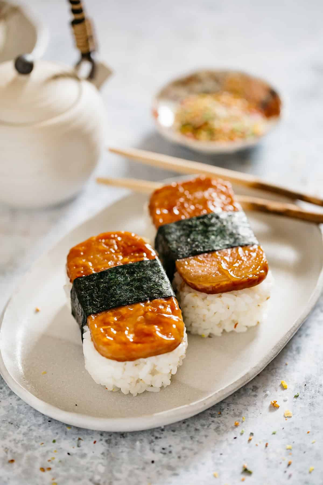

Odin Recipes
Spam Musubi

Ingredients
Musubi Ingredients
Spam
Rice
Seaweed
Sauce Ingredients
Teriyaki Sauce
Soy Sauce
Oyster Sauce
Brown Sugar
Honey
Mirin
Seasame Oil (Optional)
Note: A spam musubi rice press/mold would be helpful to have but not necessary.
Instructions
Rinse thoroughly and cook rice in rice cooker
To make sauce, mix all ingredients together in a bowl
Cut spam into flat, even slices
Pan fry spam
After cooking spam for a few minutes on each side, reduce heat and add sauce
>Prepare seaweed and place mold on top of seaweed
Build the mold by adding rice and spam on top then remove mold. If no mold, simply lay out rice in a line and put spam on top
Wrap seaweed around rice and spam. Use water along last edge of seaweed to seal the wrap